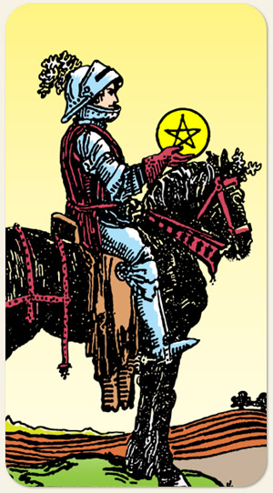

O Cavaleiro de Ouros possui um cavalo preto. As cores preto, verde e marrom são cores usadas pela Aurora Dourada para representar a terra. A moeda remete ao talento da mitologia bíblica.
Ele não vai se perguntar se a missão faz sentido, ele só não quer passa perrengue porque o orçamento é baixo. A prioridade dele não é terminar rápido, é ficar bem feito no final.
Positivo: Trabalho incansável, realizar algo por meio da ordem e da disciplina, relacionamentos sendo feitos para durar, pessoa valorizada, ter bons empregos.
Negativo: Estado estático, empacado, pessoa acumuladora, ter conforto e não querer trabalhar para pagar esse conforto, deixar a responsabilidade para o outro. Na Saúde, aponta para sedentarismo, problemas de ossos e de articulações.
Símbolos: Armadura, Elmo, Cavalo Negro, Campo Arado, Folhas de Carvalho, Árvores.
Cores: Amarelo, Vermelho, Laranjado, Verde.
Elementos: Terra e Fogo.